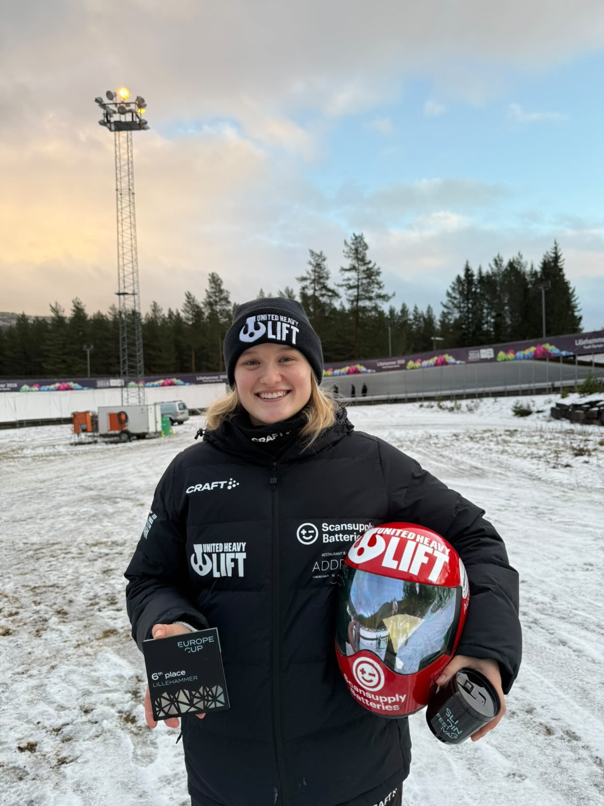
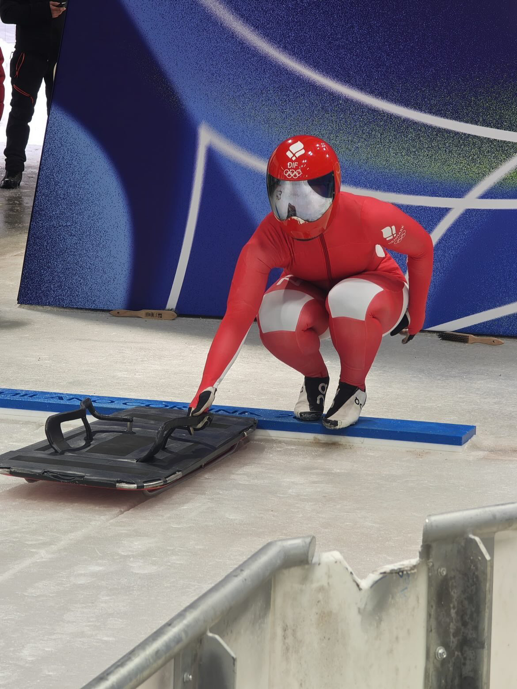
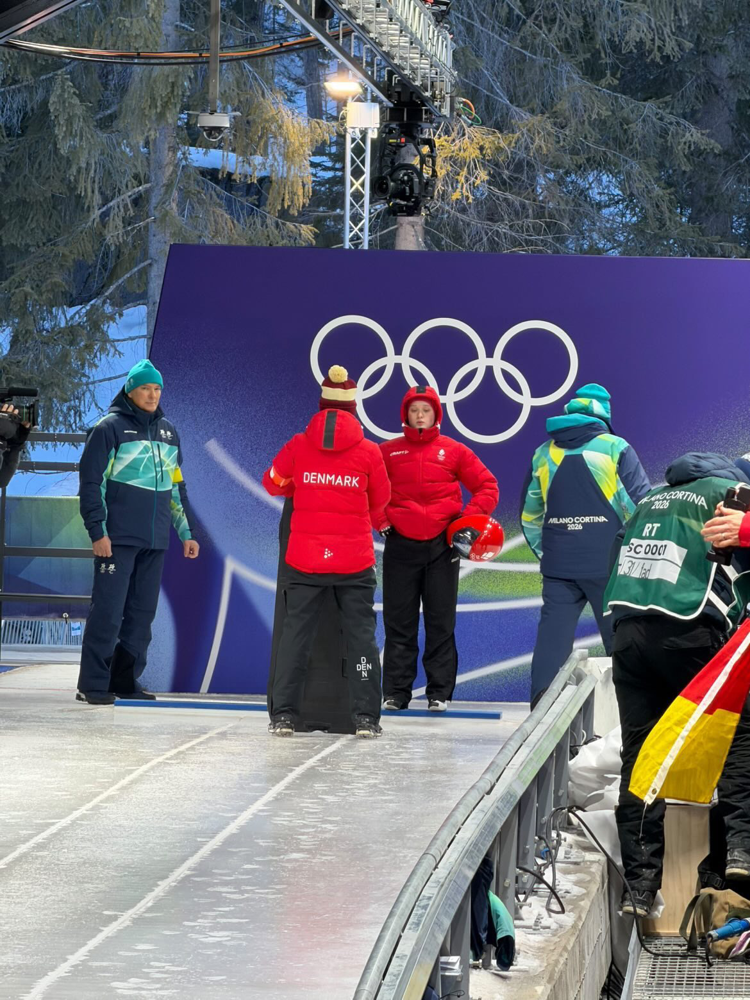

Nanna Vestergård Johansen: Hvordan bliver man skeleton-atlet i Danmark?
Forestil dig, at du tager en lille stålkælk.
Du sprinter alt hvad du kan.
Kaster dig hovedet først ned på kælken.
Og suser gennem en iskanal med mere end 100 kilometer i timen.
Velkommen til skeleton.
Det er en af de mest spektakulære olympiske sportsgrene – og samtidig en af de mindst kendte.
Alligevel har Danmark fået sine første olympiske deltagere nogensinde i sporten.
En af dem er Nanna Vestergård Johansen.

Fra Danmark til verdens hurtigste isbaner
Når man hører om en dansk håndboldspiller eller fodboldspiller, giver det mening.
Men skeleton?
Danmark har ingen olympisk iskanal.
Ingen nationale baner.
Og ingen stor tradition i sporten.
Alligevel har Nanna Vestergård Johansen fundet vej til verdenseliten.
Sammen med sin bror, Rasmus Vestergård Johansen, har hun været med til at skrive et nyt kapitel i dansk vintersport.

Hvordan træner man skeleton i Danmark?
Det mest overraskende svar er måske, at man faktisk ikke træner særlig meget skeleton i Danmark.
I stedet træner man de færdigheder, der gør en god skeleton-atlet.
- Sprint
- Eksplosivitet
- Styrke
- Koordination
- Mobilitet
- Mental træning
De første sekunder af et løb er afgørende.
Atleten skal løbe med kælken, skabe maksimal fart og derefter kaste sig op på den.
Selve kørselstræningen foregår primært i udlandet på baner i blandt andet Tyskland, Østrig, Schweiz og Italien.
En pioner for dansk skeleton
Nanna er ikke bare en atlet.
Hun er en pioner.
For få år siden var skeleton stort set ukendt i Danmark.
I dag har Danmark olympiske deltagere i sporten.
Den udvikling er skabt af en lille gruppe dedikerede mennesker, som har troet på, at Danmark kunne være med på den internationale scene.
Nanna er blevet et af de mest synlige ansigter på den rejse.
Mere end bare fart
Det er let at blive fascineret af hastighederne.
Men skeleton handler også om mod.
På få sekunder skal atleten træffe beslutninger ved ekstrem fart, mens selv små fejl kan koste dyrebare hundrededele af et sekund.
Det kræver teknisk præcision, fysisk styrke og mental robusthed.
Det er netop kombinationen af disse egenskaber, der gør sporten så fascinerende.
Hvad bliver næste kapitel?
Dansk skeleton er stadig i sin spæde begyndelse.
Men med profiler som Nanna Vestergård Johansen har sporten fået et ansigt og en historie.
Forhåbentlig kan hendes rejse inspirere flere unge danskere til at opdage sportsgrene, de måske aldrig havde overvejet.
For hvis en dansk pige kan ende med at konkurrere i olympisk skeleton, er der måske flere muligheder derude, end vi tror.

HerGames perspektiv
Hos HerGame elsker vi historier om atleter, der går deres egne veje.
Nanna Vestergård Johansen har valgt en sport, som næsten ingen danskere kender.
Alligevel har hun været med til at skrive dansk idrætshistorie.
Og måske er det netop det, der gør hendes historie så spændende.
Nogle gange starter de største eventyr de mest uventede steder.